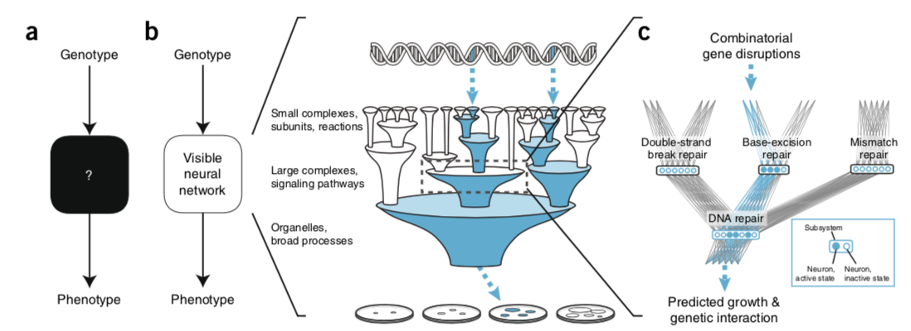

Stephen Checkley
May, 2018
Using deep learning to model the hierarchical structure and function of a cell.
Ma J. et al (2018) Nature methods. 290:15
Neural networks are powerful classifiers but their internal structures are hard to interpret.
densely entangled network structures that are neither tied to an actual physical system nor based on human reasoning.
Powerful but not useful where simulation is needed of system function and system structure.
“Visible neural networks” (VNN) enable relation of a neural network structure to biological function.
